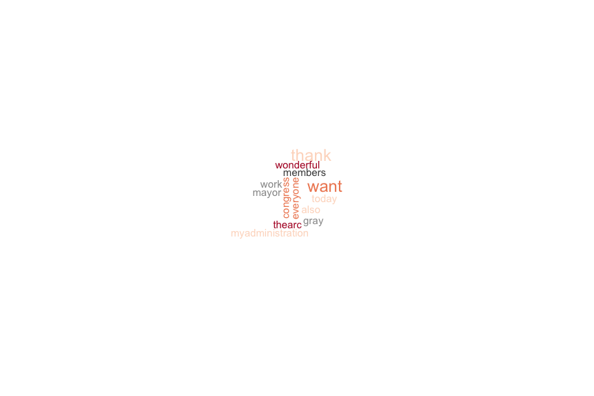

Introducing Data Science with R
week.6
謝舒凱 Lab of Ontologies, Language Processing and e-Humanities
GIL, National Taiwan University
大綱
Logical Structure and Functions(30 min)- Exploratory Data Analysis [1] Graphics (60 min)
- Lab (60 min)
流程控制
條件判斷
邏輯判斷式
<,>,<=,>===,!=等於、不等於。- A
%in%B：A 是否在 B 中。 &&,＆交集，&適用於向量的邏輯判斷，&&適用於單一值的邏輯判斷。||,|聯集，|適用狀況與&相同，||適用狀況與&&相同。
條件判斷 if else
x <- 20
if(x < 10){
x <- x + 1
}else{
x <- x - 1
}
- 另一種寫法
if(x < 10) x <- x + 1 else x <- x - 1 - 還有一個函數
ifelse(test, yes, no)
ifelse(2 < 4, 'yes', 'noooo')
## [1] "yes"
迴圈
- 常用的有
for,while
for(var in sequence){expression}
- 迴圈變數 (i, v,...) 當迴圈結束時，不會存在在 R 的環境中。
m <- c(2,5,10) for(i in m){ m <- sqrt(i) cat("sqrt(" ,i, "): ", m, "\n") }
while loop
while(condition){expression}
sum <- 0
i <- 0
while(i <= 10){
sum <- i + sum
print(sum)
i <- i + 1
}
sum
無窮迴圈
- 條件式結果永遠是
1(TRUE) 時，迴圈無法停止。
apply 函數家族
- R 叫你活用函數來減少迴圈計算。
- 這個家族包括
apply(), tapply(), lapply()等等， 能對於每一個變數的每個元素應用指定的函數。
mm <- matrix(1:12,3); mm
apply(mm, MARGIN = 1, FUN = sum)
自訂函數
- 使用內建或者安裝套件的函數
function(parameter, ...) - 也可以自訂函數，讓經常執行的程式碼重複使用。
Exercise: 綜合題
大綱
- Logical Structure and Functions (30 min)
Exploratory Data Analysis [1] Graphics (60 min)- Lab (60 min)
Exploratory Data Analysis [1]
- 作圖與統計知識是兩把瑞士刀
- 思考：
- 什麼樣資料適合用什麼樣的圖形表達？
- 適當的作圖工具（library）為何？
- 如何生動、產生互動？
- 建議學習順序：了解基本函數
plot()>>(lattice)>>ggplot2>> interactive plotrCharts,plotly,networkD3,dygraphs... (視你的應用需求而定)
講義見課程網站
Exploratory **Textual **Data Analysis: A missing part
- Textual statistics (local and global)
- Textual data transformatio: from textual information to numerical vectors
- Corpus-based analysis and manual annotation (e.g., conversation structure)
我們現在在哪裡？

{kind=link}
Basic and Interactive Plots
- 取決於什麼樣的資料型態與要看什麼樣的關係，還有，妳要給讀者怎麼樣的印象與訊息。
- 製圖類型有流程判斷 (i.e., how to choose which type of graph to use)
- R 的作圖能力一流，不要浪費掉。基本指令熟悉後，可考慮
ggplot2,googleVis,rChart等等套件。 - 作圖複雜度隨著研究應用的需求提高（e.g., 多變量，互動，動畫模擬，網路，地圖等等）
Scatter plot
- Scatter plots are used primarily to conduct a quick analysis of the relationships among different variables in our data. (try adding elements such as text, labels, and lines.)

Advanced scatter plot


3D scatter 也可以

Map 也沒問題
googleVis 的 gvisGeoMap()

簡言之
- 多利用網路資料學習，因為在技術層次教科書已經跟不上。
- 台灣 R 社群 (R User Group) 發展愈來愈好，可加入多學習
重點來了：文本資料怎麼辦
我們想要利用視覺化技術探勘文本中的訊息、趨勢、模式變化。例如
- 批踢踢語料中呈現的鄉民行為與社會網路
- 不同作者的書寫風格
- （選前選後的）政治觀點、主張、價值比較
基本的可能
- 文字雲 (word cloud) 與比較
- 關聯圖 (correlation plot) 與詞組樹 (phrase tree)
- 調整字型 (custom fonts) 與風格
Word Cloud
A word cloud is simply a graphical representation in which the size of the font used for the word corresponds to its frequency relative to others. Bigger the size of the word, higher is its frequency.
tm,wordcloud,RColorBrewer就可以做到。

也可以丟詞頻表

(中文) 字型與符碼選擇
#windowsFonts(JP = windowsFont("MS Mincho"))
#par(family = "JP")
par(family = "STKaiti")
wordcloud(doc, scale= c(2,0.5))
還有改符號的

文字雲也可以比較
- To construct a comparison cloud, we require the data to be in the form of a term matrix. The
tmpackage provides us with theTermDocumentMatrix()function that constructs a term document matrix:

用 correlation plot 來觀察文本差異

詞組樹
- A phrase tree or a word tree provides useful insight into text as it provides a context and not just the frequency of words. https://www.jasondavies.com/wordtree/

再講一個 motion chart
從多變量量化語言學角度下的文本視覺化
Visualization of textual data (Ludovic Lebart and Marie Piron)

語言大數據發揮創意的話可以看到很多東西

用 R 玩看看
ngramr: R package to query the Google Ngram Viewer
這個圖怎麼解釋

[Exercise] 愛人與太太的消長
Homework
- (小組作業) 搞懂 2 張 cheat sheet: Data Wrangling with dplyr and tidyr and Data Visualization with ggplot2 (from RStudio website), 應用以上知識在你們上次的作業（或者新的一份作業）。
- 下次講解難題與抽取組別上台分享。
可以參考：
- Hands-on dplyr tutorial for faster data manipulation in R
多注意 R-bloggers 等社群發展 - Introduction to dplyr
多利用 vignette 來學習
Reference
Graham Wilcock. 2009. Introduction to Linguistic Annotation and Text Analytics. Atmajitsinh Gohil. 2015. R Data Visualization Cookbook.